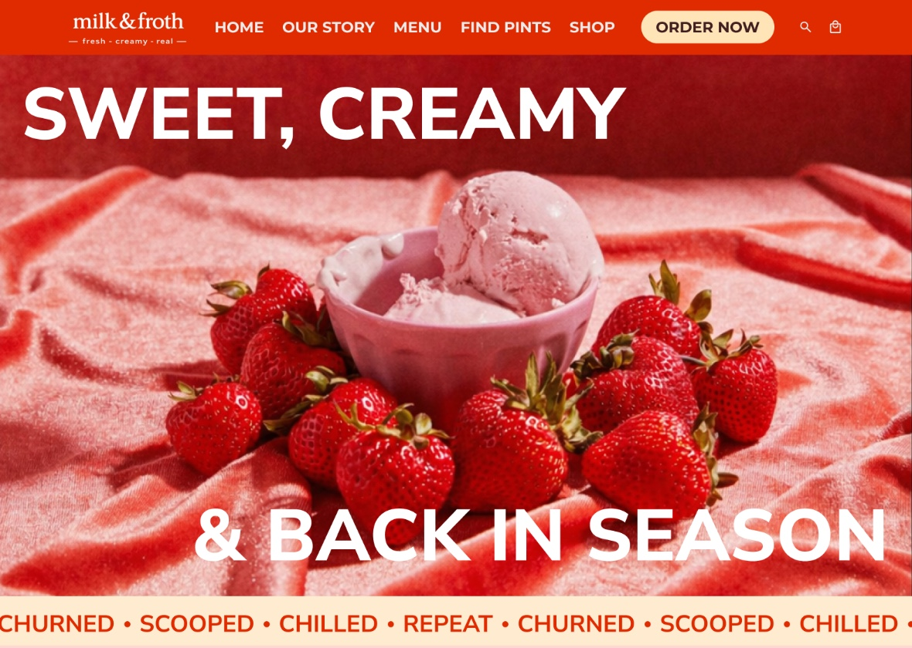

Before and after, with the reason
One pair in the Iteration frame: an early wireframe next to the final design, with a single line on what changed and why. This example uses Milk & Froth's homepage.
FRAME 5
Iteration: homepage
BEFORE: WIREFRAME
Grayscale wireframe: hero, banner, best sellers, quote and shops.
AFTER: FINAL DESIGN

Final homepage: a full-bleed photo hero with a clear Order Now button.
What changed and why
(Your one line goes here.) For example: "The wireframe led with text. I moved to a full-bleed photo of the season's flavor so the product is the first thing people see."
How it works: two images, two short labels and one line of reasoning. Add one pair per round of work, so a reviewer sees the thinking and not only the result. I need the pair and your one-line reason for each.